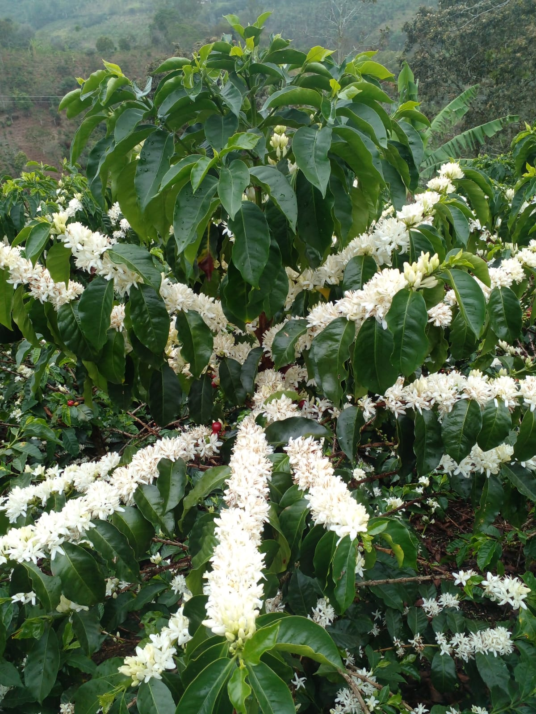

Descubre Ser Café, un café de origen único cultivado a 1.978 msnm (metros sobre el nivel del mar) en La Florida, Nariño. Una experiencia de sabor con notas de chocolate, caramelo y una acidez cítrica brillante.
